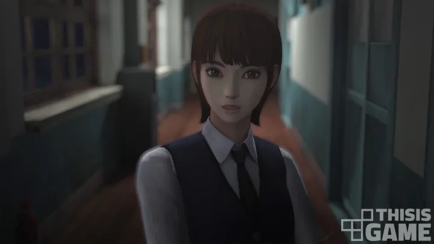
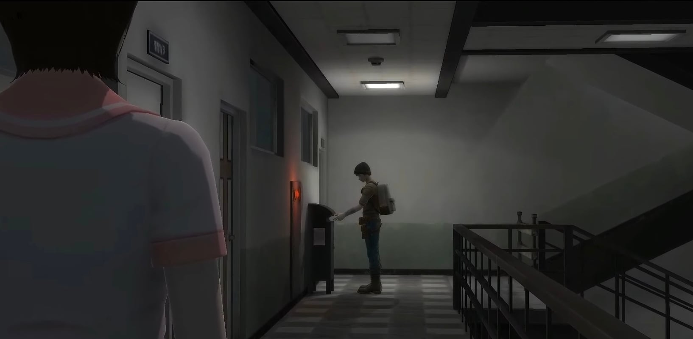
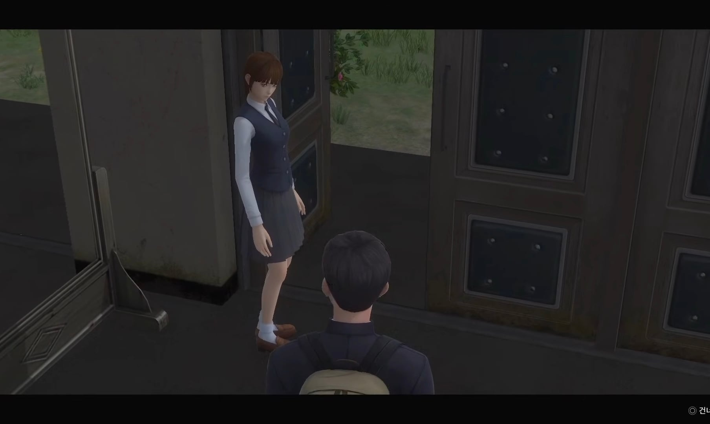
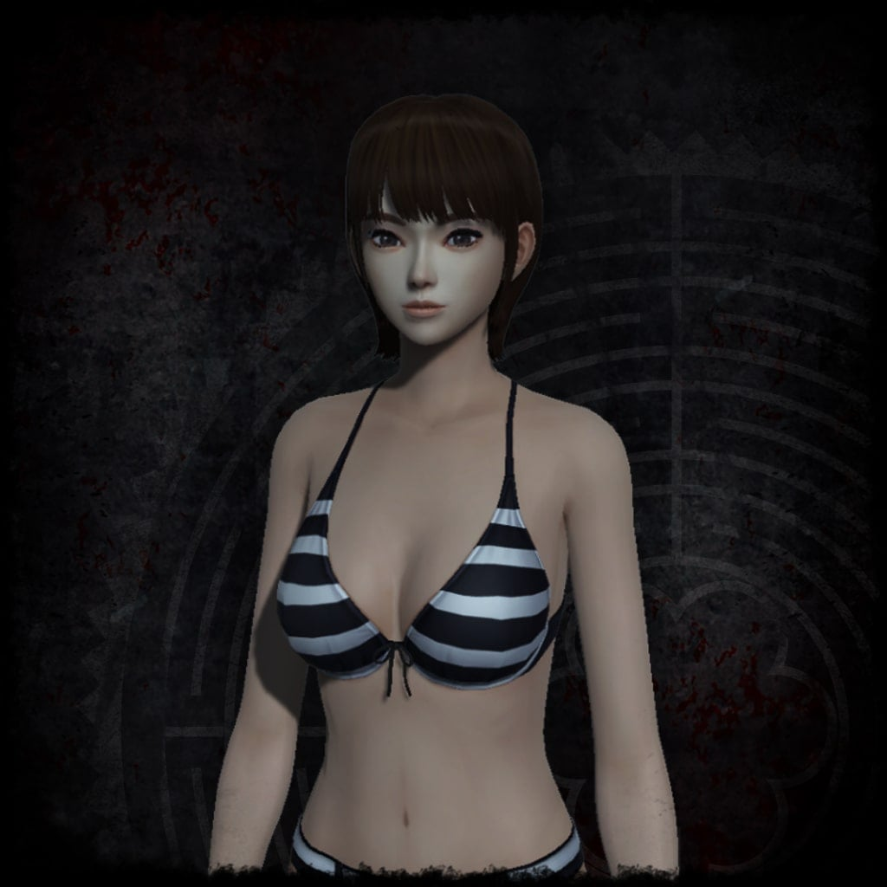
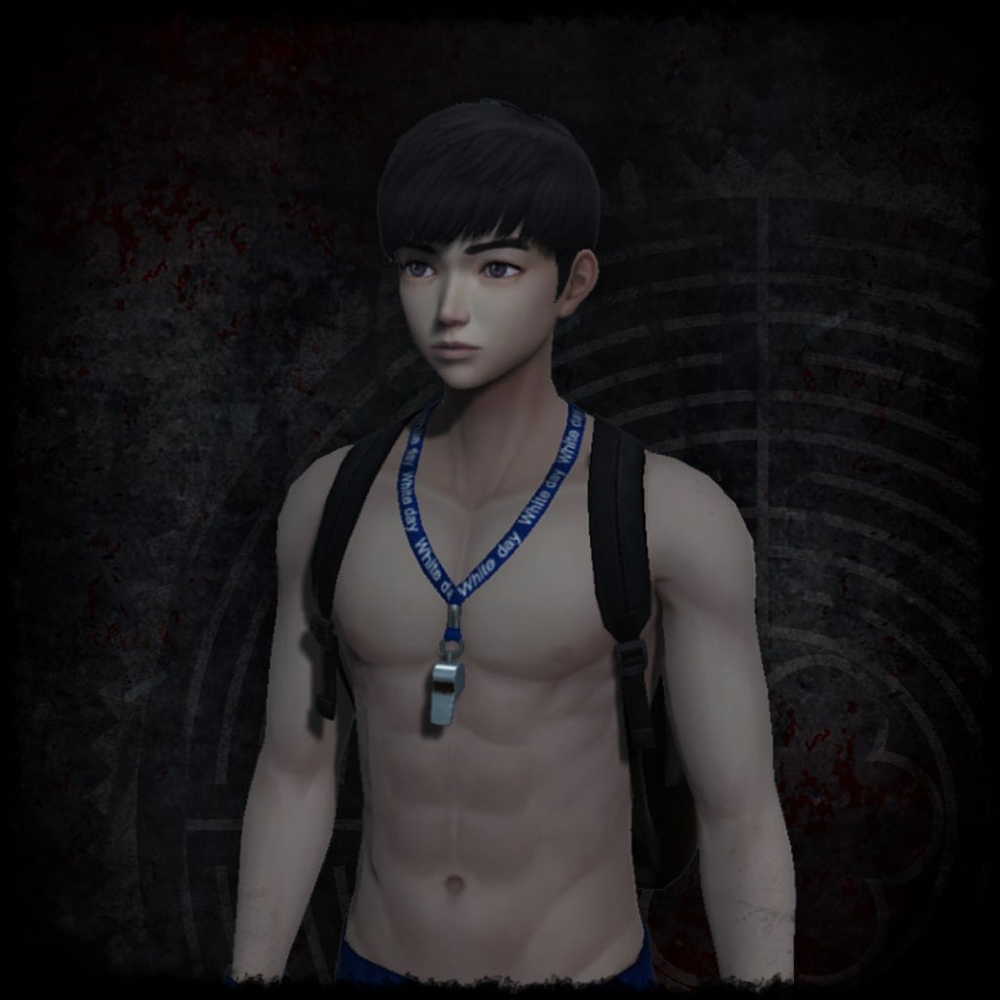

화이트데이 리메이크판 '튜베로즈' 엔딩 장면인데....

해당 엔딩에 나온 '김성아'는 3년전 억울하게 화재로 사망한 귀신인데.... 다른 히로인인 '한소영'의 육신으로 부활을 시도할 목표를 가지고 있음...

여기서 주인공 '이희민'은 자신이 김성아의 부활 계획에 이용당하는걸 전혀 모르고 '백워드 카세트 테이프'를 학교 신문고에 투고하지만....
해당 테이프는 '김성아의 사망당시 육성'이 담긴 테이프로

이 때문에 자신도 부활을 포기하고 이희민을 귀신 세계로 끌고가 학교 밖으로 영원히 못나가게 만듬.
근데 이게 왜 부러운거나면.....

(김성아의 코스튬)

(이희민의 코스튬)
어찌보면 둘이 ㅈㄴ 잘된거 같음 ㄹㅇ....
댓글
수집 당시 댓글 23개
인붕이 · 4 시간 전
· 하겐다즈 · 4 시간 전
두려워요 · 4 시간 전
화이트데이 아직도 안해봄 무서웡
· 퐁퐁이 · 4 시간 전
찬송가랑 불경 동시에 틀어놓고 하면
괜찮음
· Alchemy · 4 시간 전
그 둘이싸워서 이상한소리내면 어케 ㅠㅠ
· 곰참치 · 5 분 전
쫄지말고 해봐
잘때 엄마손잡고 자면 됨 ㅋ
동현이의퍼니박스 · 4 시간 전
까짓 거 한 번 같이 살죠 뭐
루미네스 · 4 시간 전
귀신과 살기 1일차 아무것도 없는 학교
체육복사시고인생을사세요 · 4 시간 전
희민이는 밖에나가도 먹을거많아
붐업성애자 · 4 시간 전
글이 뭔가 중간이 빈거 같은데 육성테이픈데 뭐 어쩌라고
· 익명
학교 신문고로 화재사고 진실을 밝혀지게 만들어줘서 부활 포기한걸로 추정된다는 뜻입니다...
· 붐업성애자 · 4 시간 전
굿 이집 as 빠르구만
· 고르베 · 4 시간 전
엔딩에서 두리번 거리는건 뭐야? 현실세계로 가는 문같은거 찾는?
· 익명
원래 학교 정문이 있어야하는데 자신이 귀신이 된걸 모르고 없어진걸 봤으니 매우 당황하는거 같습니다...
· 페페로니치즈햄버거 · 3 시간 전
ㄹㅇ 좆같은 글이라서 난 ㅂㅁ 줬음
너 국어 잘하네
이진우보다 성적 높을듯
어벤져스 · 4 시간 전
노콘질싸도 자유겠네...
아쎄이 · 4 시간 전
자장면계란회복운동 · 4 시간 전
귀신을 존나 잘만들어놨는데
굳이 안찾아보면 안보고 깰수 있어서 아까웠댯
불가능한닉네임 · 4 시간 전
쿨뷰티 숏컷과 평생 함께라니 정말 최고야
7렙이상은좀그래 · 3 시간 전
함 해보입시더
니말이맞습니다 · 3 시간 전
난 소영이파야
후욱후욱오호혹 · 3 시간 전
히야~
치자 · 2 시간 전
사탕하나만 더줄래는 뭔뜻임?